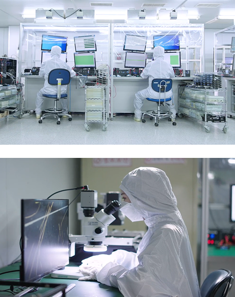
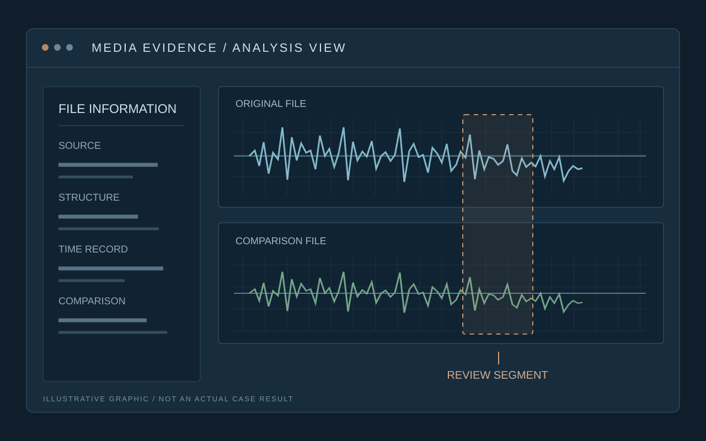

국내 최대 규모의 분석 인프라
전문 엔지니어와 저장매체·모바일 분석 환경을 갖추고, 대상과 상태에 맞는 분석 방법을 검토합니다.
DIGITAL FORENSICS SERVICES
자료 유출 조사부터 민·형사 증거 확보,
음성·영상 위변조 분석까지.
확인하고 싶은 사실에서 시작합니다.
기기와 파일에 남은 기록을 분석하고, 사건과 연결되는 근거를 정리합니다.
WHAT IS DIGITAL FORENSICS?
디지털 자료에 남은 기록을 분석해
사건과 관련된 사실관계를 확인하는 과정입니다.
자료 유출이 의심되거나 분쟁에 필요한 기록을 확인해야 할 때, MDFC가 디지털 자료를 분석합니다. 기록의 출처와 시간, 앞뒤 맥락을 대조하고 확인된 사실과 판단 범위를 정리해 드립니다.
기기 · 파일 · 백업
출처 · 시각 · 맥락
보고서 · 목록 · 타임라인
데이터 복구가 자료를 확보하는 작업이라면, 디지털포렌식은 그 자료와 관련 기록을 분석해 사건의 맥락과 근거를 정리하는 과정입니다.
WHY MDFC
1990년부터 쌓아온 데이터 기술의 경험.
전문 인프라와 협력 경험을 필요한 분석으로 연결합니다.

전문 엔지니어와 저장매체·모바일 분석 환경을 갖추고, 대상과 상태에 맞는 분석 방법을 검토합니다.
천안함·세월호 CCTV 영상 복원, 3·20 전산대란 복구 지원과 국가기관 기술 협력의 경험을 바탕으로 자료를 다룹니다.
지방변호사회·법무법인과의 협력 경험을 바탕으로 쟁점을 확인하고 출처·시각·맥락을 갖춘 자료와 보고서를 정리합니다.
방문이 어려운 경우 원격 분석부터 상담하세요. 기기 상태와 접근 권한을 확인한 뒤 원격 진행 항목과 자료 전달 방법을 안내합니다.
대상과 접근 조건을 확인한 뒤 진행 방법을 협의합니다.
장비 작업이 필요한 경우에는 별도 접수를 안내합니다.
01 / DATA LEAKAGE INVESTIGATION
회사 자료가 외부로 이동했는지 확인하고 싶습니다.

업무용 PC·노트북·서버와 저장매체에 남은 기록을 분석해 자료가 사용·이동·삭제된 정황을 확인합니다. 외부 장치 연결 이력과 확보된 계정·접근 로그, 실제 파일을 함께 대조해 관련 행위의 시간 흐름을 정리합니다.
조사 기간의 문서 생성·열람·수정·압축 기록과 파일 경로를 살펴봅니다.
USB·외장매체 연결 시각, 확보된 계정·접근 로그와 관련 파일 기록을 대조합니다.
삭제 흔적과 남아 있는 자료, 이전 버전에서 사건과 관련된 정보를 확인합니다.
PC·회수 매체·백업의 파일 내용을 비교하고 출처와 확보 상태를 정리합니다.
확인 범위 안내USB 연결이나 파일 내용의 일치만으로 복사 방향·행위자·무단 반출을 단정하지 않습니다. 여러 기록을 함께 검토해 확인된 사실과 해석을 구분합니다.
02 / MOBILE EVIDENCE ANALYSIS
분쟁과 관련된 대화·통화·사진 기록이 필요합니다.

스마트폰과 백업에 남은 연락·대화·사진 등의 기록에서 사건과 관련된 자료를 확인합니다. 민·형사 분쟁의 쟁점과 필요한 기간에 맞춰 기록을 선별하고, 자료의 출처와 앞뒤 맥락을 함께 정리합니다.
연락 상대방과 시각, 통화·문자 기록에서 쟁점과 연결되는 정보를 확인합니다.
대화 참여자, 앞뒤 대화, 첨부파일을 함께 검토해 개별 메시지의 맥락을 살펴봅니다.
기기와 백업에서 관련 사진·영상·녹음·메모를 확인하고 확보 상태를 정리합니다.
기기·백업·과거 연결 PC의 기록을 대조하고, 기록상 존재와 실제 파일 확보 여부를 구분합니다.
확인 범위 안내기기·앱 버전·암호화·접근 조건에 따라 확보 범위가 달라집니다. 필요한 자료가 무엇인지 먼저 확인하고 진행 가능한 범위를 안내합니다.
03 / AUDIO & VIDEO AUTHENTICITY
녹음이나 영상의 편집·변환 정황을 확인하고 싶습니다.

녹음·영상 파일의 구조와 시간 정보, 구간의 연속성을 검토합니다. 원본 기기와 비교 자료를 대조해 생성·변환·편집 정황을 확인하고, 자료를 통해 판단 가능한 범위를 설명합니다.
파일 형식·내부 구조·인코더·작성 정보를 살펴보고 생성·변환 정황을 검토합니다.
파일과 원본 기기에 남은 생성·수정 기록, 전달 경위를 함께 비교합니다.
검토 대상 구간의 파형·시간 흐름·연속성을 살펴보고 확인 근거를 표시합니다.
원본·전달본·비교 파일의 차이와 재인코딩 정황을 대조합니다.
확인 범위 안내구조나 파형의 차이만으로 위·변조를 단정하지 않습니다. 원본·비교 자료와 전달 과정에 따라 판단 범위가 달라집니다.
HOW WE WORK
쟁점·기간·대상과 필요한 결과물을 확인합니다.
기기 상태와 접근 권한을 확인하고, 자료의 출처와 확보 과정을 기록합니다.
관련 기록을 선별하고 출처·시간·내용을 교차 검토합니다.
확인된 사실과 판단 범위, 결과물의 내용을 설명합니다.
FREQUENTLY ASKED QUESTIONS
의뢰 전에 궁금한 점을
먼저 확인하세요.
확인하려는 사건의 쟁점, 관련 기간, 대상 기기와 보유 자료를 간단히 정리해 주세요. 스마트폰은 모델·작동·잠금 상태, 음성·영상은 최초 확보 파일과 의심 구간을 함께 알려 주시면 분석 범위를 정하는 데 도움이 됩니다.
삭제 이후의 사용 상태, 저장 방식, 암호화와 덮어쓰기 여부에 따라 가능 범위가 달라집니다. 기기와 백업에 남은 자료를 확인하고 실제 확보한 파일과 기록상의 흔적을 구분해 설명합니다.
대상 기기와 자료의 상태, 접근 권한에 따라 원격 진행 가능 항목을 협의합니다. 저장매체의 물리 작업이나 현장 확보가 필요한 경우에는 별도 접수 방법을 안내합니다.
모델, 운영체제, 잠금·손상 상태와 보유한 백업을 먼저 확인합니다. 상담 및 상태 검토 후 확보 가능한 자료와 필요한 작업을 안내하며, 모든 기기에서 동일한 결과를 보장하지는 않습니다.
대상 수, 자료량, 기기 상태, 분석 쟁점과 필요한 결과물에 따라 달라집니다. 상담에서 조사 범위를 정한 뒤 예상 일정과 비용을 안내하고 진행 여부를 협의합니다.
의뢰 목적에 따라 분석 보고서, 관련 파일 목록, 대화·행위 타임라인, 확보된 파일 등을 전달합니다. 확인된 사실과 해석, 자료 확보 및 판단의 한계를 구분해 설명합니다.
가능하면 최초 확보 파일과 원본 기기 또는 매체를 준비해 주세요. 메신저 전달·재저장·변환이 있었다면 그 경위와 비교 파일을 함께 알려 주시면 분석에 도움이 됩니다.
CONTACT MDFC
대상 기기와 자료, 의뢰 목적을 알려 주세요.
필요한 분석과 진행 방법을 함께 정리해 드립니다.
평일 09:00 – 18:00